| In this position, if we call the average number of movies remaining E, half the time we get a square leaving the same situation with 1 more move, and half the time we get a triangle that we can place but would end the game. Thus E = ½(E+1) + ½(1), or E=2. |
| 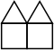 | In this position, half the time we get a square which ends the game immediately, and half the time we get a triangle that we can place upside-down to leave the previous example. Thus E = ½(0) + ½(1+2), or E=3/2. |
| 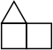 | In this position, half the time we get a square which leads to our first example, and half the time we get a triangle that leads to our second example. Thus E = ½(2+1) + ½(3/2+1), or E=11/4. |
Can you find how long the game will last on average from the positions below, which are enough to completely solve the width 2 cases? How about positions of width 3? Warning: some of them are tricky because it is unclear what the best placement of a piece is. And there are infinite chains you will have to deal with for seemingly simple positions.
| 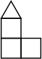 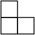 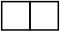 |
end
| ↑
| 3/2=1.5 ←
| 11/4=2.75 ←
| 37/8=4.625 ↓
| ↙ | ↑
| ↕
| 2
| 19/8=2.375 ←
| 9/2=4.5 ↺ | ↘
| ↓
|
| 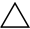 | 0 |
Here are my solutions for expected lifetimes for width 3 positions. Evert Stenlund corrected some of my calculations.
2 | ← | 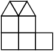 223/36=6.194+ | ← | 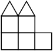 295/36=8.194+ (ES) | ← | 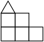 463/48=9.645+ (ES) | |||||||||||||||||||||||||||||||||||||||||||||||||||||
| ↙ | ↙ | ↙ | ↖
| ← | 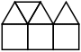 | 13/2=6.5 ← | 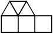 | 151/18=8.388+ ← | 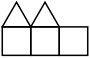 | 295/36=8.194+ ← | 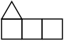 | 655/72=9.097+ ← | 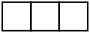 | 10949/1008=10.862+ (ES) ← | 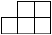 | 709/63=11.253+ (ES) ↓
| ↓
| ↓
| ↓
| ↓
| ↗
| ← | 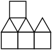 | 51/8=6.375 ← | 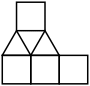 | 149/18=8.277+ 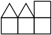 | 6 ← | 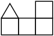 | 8 ← | 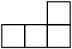 | 1339/126=10.626+ (ES) ↓
| ↓
| ↺
| ↘ | ↺
| these lead to a collection of towers where squares are put on the left and triangles are put on the right | 2 ← | 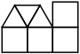 | 4 | |||||||||||||||||||||
If you can extend any of these results, please e-mail me. Click here to go back to Math Magic. Last updated 11/23/18.